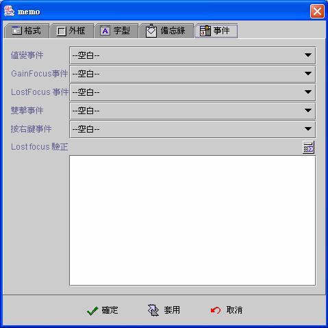

|

備忘錄元件 (Memo component)

共同屬性 (common properties)
檔案名稱與前綴路徑
(file name and prefix path)
編輯、下載、上載文字檔案
(edit, download, upload text file)
使用備忘錄元件編輯
VARCHAR
型別的欄位 (use memo to edit VARCHAR type field)
備忘錄屬性 (Memo properties)
事件 (event)
運算式屬性存取
(formula get/set properties)
備忘錄元件
(Memo component) 是繼承自 Java™ JEditorPane
的元件，使用於不限制長度、可多行 (multi-line)
編輯的文字資料，其中：
文字的資料格式可以是
-
純文字
(plain text)。
-
RTF。
-
HTML。
文字的資料來源可以是
-
直接儲存於資料記錄中的
LONGVARCHAR 欄位型別的文字資料。
-
前綴路徑
(prefix path) 加上 儲存於資料記錄中的VARCHAR
欄位型別的檔案名稱 (file name)。
-
前綴路徑
(prefix path) 加上 直接指名的檔案名稱 (file
Name)。
只有直接儲存於資料記錄中的 LONGVARCHAR
欄位型別的文字資料，編輯資料後 (updated)，在連結的資料來源存檔時
(post)，異動的資料會更新至資料欄位中 (data field)。編輯時，使用者可以標示
(mark)
文字資料，按右鍵後，以顯示的功能選單 (menu)，加入文字樣式
(style)。使用檔案名稱 (file name)
做為文字資料來源，檔案內容的更新，必須透過 檔案上載與下載
的方式，進行實際的檔案內容更新。若只是改變資料記錄
(data field) 中的VARCHAR
欄位型別的檔案名稱，備忘錄元件 (Memo
component) 會在欄位值 (檔案名稱)
更新存檔後，自動下載該檔案，更新備忘錄元件的顯示資料，如果該檔案不存在則顯示空白。
檔案名稱與前綴路徑
(file name and prefix path)
備忘錄元件可以顯示
(display) 文字資料檔(純文字、RTF、HTML)
的內容，設計師或使用者必須以前綴路徑與檔案名稱，指定文字資料檔所在的位置，前綴路徑與檔案名稱所組合成的字串，也必須是一有效且符合
UNC (Universal Naming Convention) 命名的檔案來源，才能正確顯示資料。UNC
(Universal Naming Convention) 命名法則包含三部份：主機名稱或IP
(host name or ip)、分享路徑 (sharing path)、檔案路徑名稱 (file path
and name) 合組成 \\SERVER\Sharing path\path\filename
的檔案來源位置。檔案的資料存取是由 jLIVE™ middleware
提供服務，所以在 jLIVE™ middleware
所在的主機，可以且允許存取的網路資源，皆可以當成備忘錄元件的文字資料檔來源，因此網路管理師必須把要提供給系統或使用者存取的資源路徑，分享
(share)
存取權限給予jLIVE™ middleware 所在的主機。UNC
命名法則的主機名稱或IP (SERVER name or ip)
，設計師可以用運算式 (formula) 的 ApServerName()
或 ApServerIp() 取得 jLIVE™ middleware
主機，避免主機名稱或 IP
更換時程式須隨之更動。如果是存取使用者端 (client)
的檔案資源，則直接以磁碟名 (driver) 加檔案路徑名稱 (file path
and name) 即可 (例如：C:\\jlive\doc\index.html)，此時系統直接存取使用者端
(client) 的檔案資源，不經由 jLIVE™ middleware，但是使用者端
(client) 必須在 JRE (Java Runtime Environment) 中授權 (grant)
程式模組存取本機的權限，才可正確顯示資料。
▲Top
備忘錄屬性
(Memo properties)
-
資料來源
(data source)：選取資料來源。
-
資料欄位
(data field)：選取資料欄位。備忘錄元件只能選取資料欄位型別為
VARCHAR 或 LONGVARCHAR 的欄位，連結 VARCHAR
的欄位將解譯為檔案名稱 (file name)；LONGVARCHAR
的欄位將根據內含資料解譯為 text/plain 或 text/rtf。
-
可編輯
(editable)：是否允許使用者編輯。
-
預設：預設存入資料記錄內的資料格式。
-
文字/Rtf 內容：RTF
格式。
-
文字/Plain 內容：純文字。
-
靜態的檔案：檔案名稱。
-
前綴路徑 (Prefix path) \\server\sharingPath\Path\ ：前綴路徑
加上 檔案名稱 所組成的
UNC (Universal Naming Convention) 字串為完整檔案來源。參閱 檔案名稱與前綴路徑
(file name and prefix path)
-
捲軸 (scrollbar)：

▲Top
事件
(event)
-
值變事件
(changed event)：當每次輸入值改變時，即引發事件 (fire
event)，每一個按鍵輸入包括刪除鍵 (delete)
但不包括方向鍵，都會引發值變事件。
-
Gain
Focus 事件：當 Focus 移入備忘錄元件時，即引發事件
。
-
Lost
Focus 事件：當 Focus 移出備忘錄元件時，即引發事件
。
-
雙擊事件
(double clicked event)：當雙擊滑鼠的左鍵時，即引發事件。
-
按右鍵事件
(right clicked event)：當按下滑鼠右鍵時，即引發事件。

▲Top
編輯、下載、上
傳文字檔案 (edit, download, upload text file)
使用備忘錄元件以檔案名稱為連結的文字資料來源，或動態的給定檔案名稱，直接操作編輯文字資料檔
(Plain text 、RTF、 HTML)
時，設計師必須負責將編輯後的文字資料檔上載更新。程式執行期
(runtime)，設計師隨時可以動態的根據需求，上傳下載文字資料檔，更新或儲存備忘錄元件的內含資料。備忘錄元件可以不連結資料來源，亦不需設定實際的檔案名稱，屬性設定時，核選屬性
靜態檔案 (static file) 而只給定前綴路徑
(prefix
path)，在程式執行期 (runtime) 設計師以運算式 (formula)
動態的下載 (download) 檔案資料，在使用者編輯後，上傳
(upload) 更新檔案內容。
下載檔案資料：
-
SetProp("備忘錄元件名稱",
"file", "檔案名稱")：只給定檔案名稱，檔案來源是備忘錄元件預設的前綴路徑加上"檔案名稱"。
-
SetProp("備忘錄元件名稱",
"uncfile", "UNC命名的檔案來源")：給定完整UNC命名的檔案來源。
上傳更新檔案資料：
取得目前檔案來源名稱：
取得前綴路徑：
擷取備忘錄元件內含值：
-
GetProp("備忘錄元件名稱",
"text")：傳回不含文字式樣屬性
(styled
properties) 的純文字資料。
-
{備忘錄元件名稱}：傳回不含文字式樣屬性
(Styled properties) 的純文字資料。
-
GetProp("備忘錄元件名稱",
"attrtext")：傳回含文字式樣屬性
(styled
properties) 的文字資料。
▲Top
使用備忘錄元件編輯
VARCHAR 型別的欄位 (use memo to edit VARCHAR type field)
備忘錄元件連結資料欄位型別為 VARCHAR
的資料欄位，其內含值將會被解譯為檔案名稱。如果有屬於VARCHAR
的資料欄位，希望以備忘錄元件為編輯介面元件，設計師必須自行維護資料的讀取與更新，設計方式如下：
-
備忘錄元件選擇以靜態檔案連結，檔案名稱留空白，前綴路徑
設為
"" (空字串)。
-
讀入資料：VARCHAR
的資料欄位所屬的資料來源 (Data
Source)，在讀取後事件(After fetch event) 連接一運算式事件─
SetProp("備忘錄元件名稱",
"text", {資料來源:VARCHAR
的資料欄位})，將該欄位值讀入備忘錄元件。
-
使用者以備忘錄元件編輯內容。
-
資料存檔：VARCHAR
的資料欄位所屬的資料來源 (data source)，在更改前事件(before update event)
連接一【設定資料欄位資料】事件 (set record field data
event)，設定該欄位值為 {備忘錄元件名稱}
。
▲Top
運算式屬性存取
(formula get/set properties)
SetProp("元件名稱",
"屬性", 值) ：屬性設定。
SetProp("元件名稱",
"屬性", 值1, 值2)：屬性設定。
GetProp("元件名稱",
"屬性")：屬性讀取。
| Set
Properties |
| 屬性
(Properties) |
值1
(Value 1) |
值2
(Value 2) |
說明
(Descriptions) |
| enabled |
1 致能，0 失效 |
|
致能與失效。 |
| setfocus |
1 設定 Focus |
|
設定 Focus。 |
| visible |
1 顯示，0 隱藏 |
|
顯示與隱藏。 |
| repaint |
1 重繪，2
立即重繪 |
|
重繪。 |
| revalidate |
1 |
|
元件重整。 |
| file |
文字串 檔案名稱 |
|
以前綴路徑加上檔案名稱，下載檔案至備忘錄元件。 |
| uncfile |
UNC 檔案資源名稱 |
|
以UNC
檔案資源名稱，下載檔案至備忘錄元件。 |
| saveas |
UNC 檔案資源名稱 |
|
將備忘錄內容，存檔成
UNC 檔案資源名稱。 |
| text |
文字串 |
|
以文字串取代備忘錄內容。 |
| html |
html 文字串 |
|
以 html 文字串取代備忘錄內容。 |
| refresh |
1 |
|
重新下載，更新備忘錄內容。 |
| bg |
RGB(red, green, blue) |
|
背景顏色。值1 必須以Formula 的 RGB() 運算式給值。
|
| fg |
RGB(red, green, blue) |
|
前景顏色。值1 必須以Formula 的 RGB() 運算式給值。
|
| x |
正整數值 |
|
左座標位置。 |
| y |
正整數值 |
|
上座標位置。 |
| w |
正整數值 |
|
元件寬度。 |
| h |
正整數值 |
|
元件高度。 |
| xy |
正整數值 |
正整數值 |
左(Value1) 上(Value2) 座標位置。 |
| wh |
正整數值 |
正整數值 |
元件寬(Value1) 高(value2)度。 |
| Get
Properties |
| 屬性
(Properties) |
傳回值
(Return value) |
說明 (Descriptions) |
| isenabled |
1 致能，0 失效 |
致能與失效。 |
| isvisible |
1 顯示，0 隱藏 |
顯示與隱藏。 |
| file |
UNC 檔案資源名稱 |
目前備忘錄元件連結的檔案資源名稱。 |
| prefix |
文字串 前綴路徑 |
備忘錄元件的前綴路徑。 |
| text |
文字串 |
傳回目前備忘錄元件不含字元屬性的內容。 |
| attrtext |
文字串 |
傳回目前備忘錄元件含字元屬性的內容。 |
| x |
整數值 |
左座標位置。 |
| y |
整數值 |
上座標位置。 |
| w |
整數值 |
元件寬度。 |
| h |
整數值 |
元件高度。 |
▲Top
Copyright © 2001~
2004 Probe Technology . All Rights Reserved.
Questions, comments,
and suggestions to Service@probe.com.tw
|